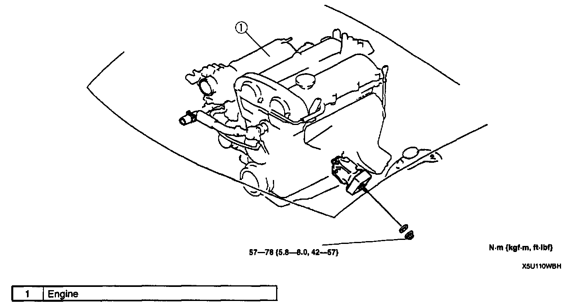
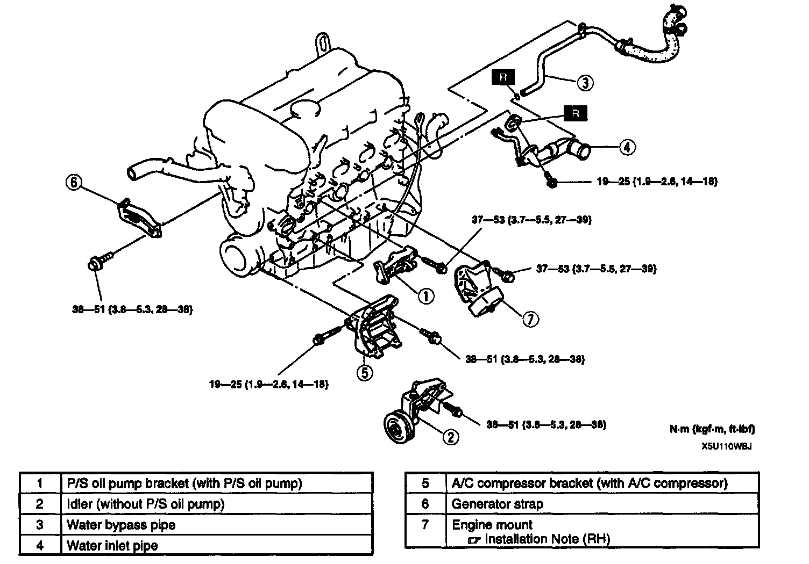
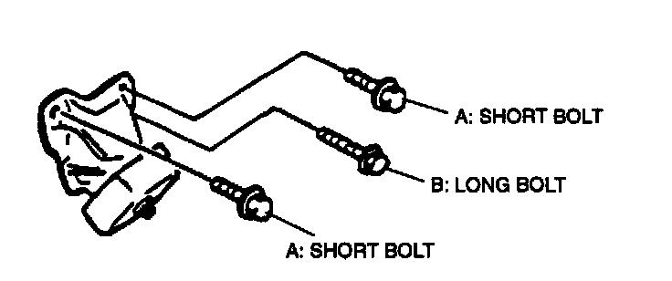

Procedures

ENGINE REMOVAL/INSTALLATION
Warning:
^ Fuel vapor is hazardous. It can very easily ignite, causing serious injury and damage. Always keep sparks and flames away from fuel.
^ Fuel line spills and leakage are dangerous. Fuel can ignite and cause serious Injuries or death and damage. Fuel can also irritate skin and eyes. To prevent this, always complete the "Fuel Line Safety Procedure". Refer to Powertrain Management.
1. Disconnect the negative battery cable.
2. Remove the radiator.
3. Remove the air cleaner.
4. Disconnect the accelerator cable and bracket.
5. Disconnect the fuel hose. Fuel Delivery and Air Induction
6. Disconnect the vacuum hose and engine harness connectors.
7. Disconnect the heater hose.
8. Remove the drive belt.
9. Remove the P/S oil pump with the oil hose still connected. Position the P/S oil pump so that it is out of the way.
10. Remove the A/C compressor with the pipe still connected. Position the A/C compressor so that it is out of the way.
11. Remove the transmission.
12. Remove in the order indicated in the table.
13. Install in the reverse order of removal.
14. Start the engine and
1. Inspect for the engine oil, engine coolant, transmission oil and fuel leakage.
2. Verify the ignition timing. Ignition Timing
3. Verify the idle speed. Idle Speed
4. Verify the idle mixture. Air/Fuel Mixture
15. Perform a road test.

ENGINE DISASSEMBLY/ASSEMBLY
1. Remove the oil pressure switch.
2. Remove the intake-air system.
3. Remove the exhaust system.
4. Remove the oil filter.
5. Remove the high-tension lead.
6. Remove the ignition coil.
7. Remove the generator.
8. Disassemble in the order indicated in the table.
9. Assemble in the reverse order of disassembly.
Engine Mount Installation Note (Right-Hand)

^ Install the engine bolts as shown.